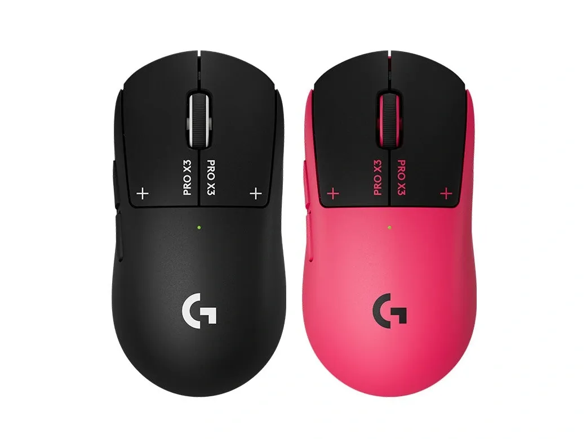
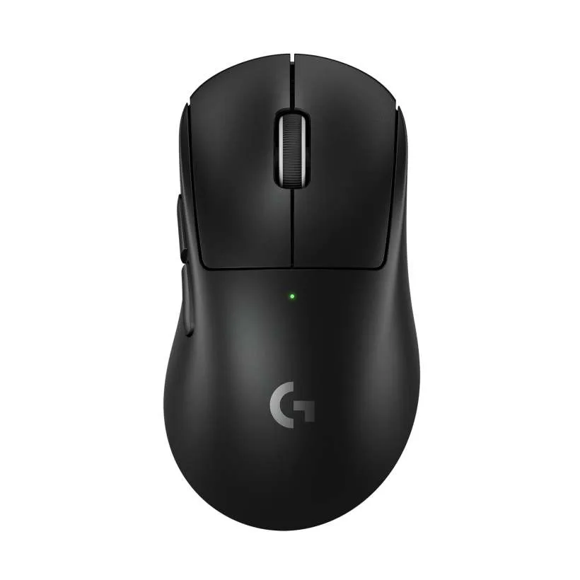
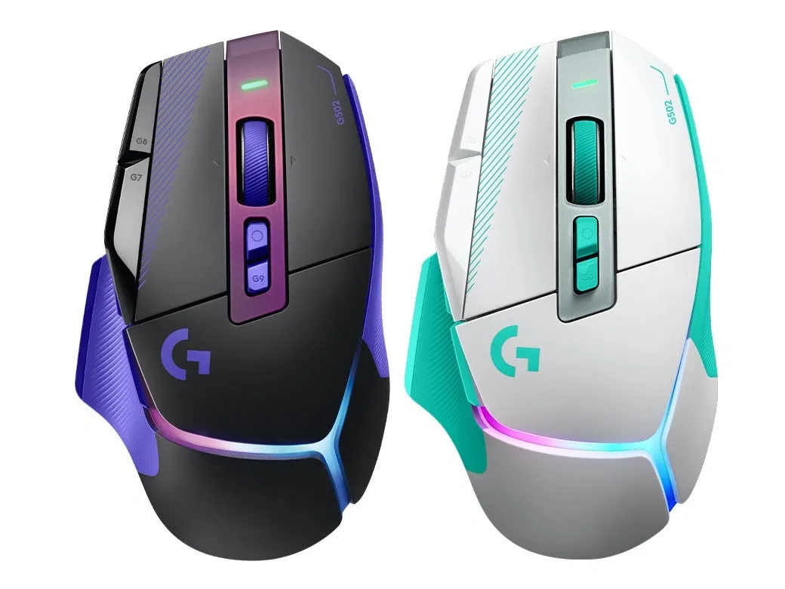
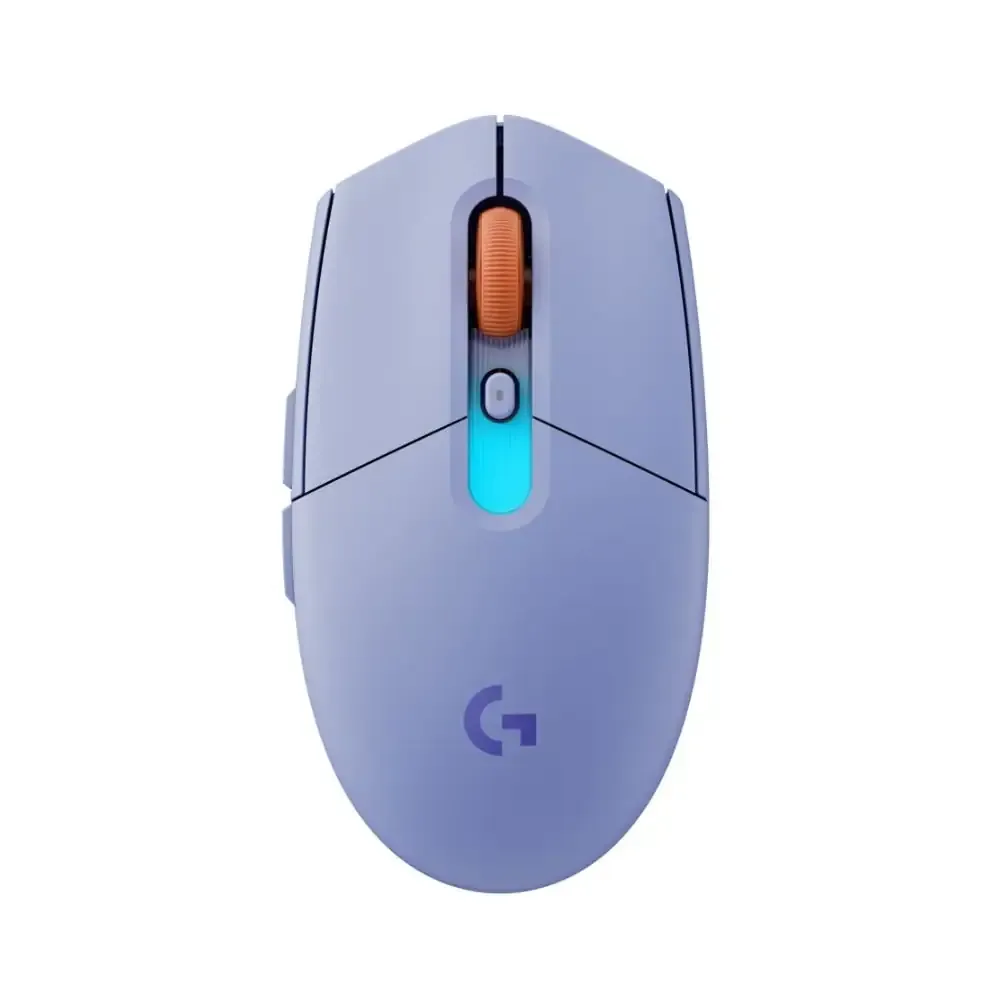

PRO X3 SUPERSTRIKE

PRO X SUPERLIGHT 2 DEX SE

G502 X PLUS

G304/G305 X
그런데 왠지 전부 디자인은 그대로인거 같으면 착각은아님
지슈스 x3 는 노르딕 MCU에서 자체 칩으로 교체하면서 배터리사용시간이 올라갔는데 과연....
한줄요약 : 중고신입같은 신제품들 대거 등장. 그런데 지슈슉 빼고는 전부 더블클릭저주 부터 걱정해야할듯
자석축 느낌 좋던데 앞으로 다 저걸로 바뀌려나